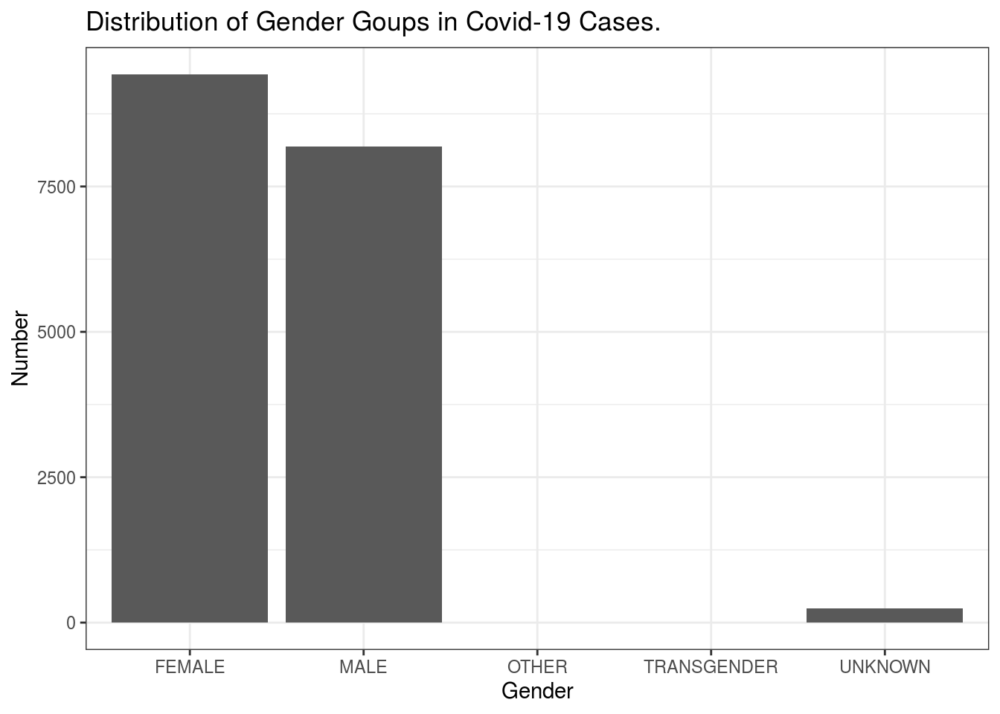
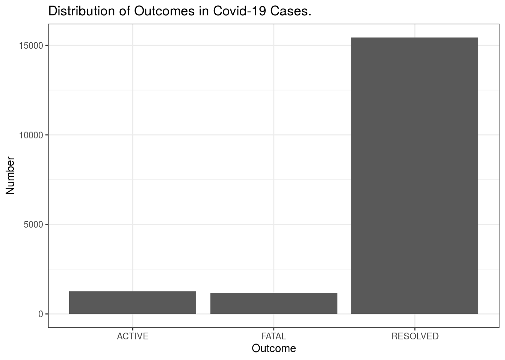
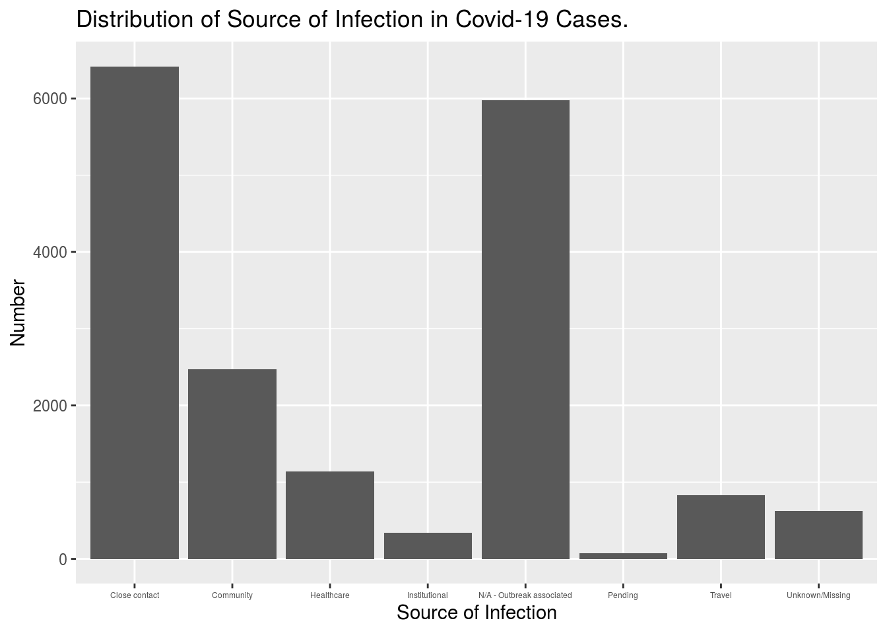
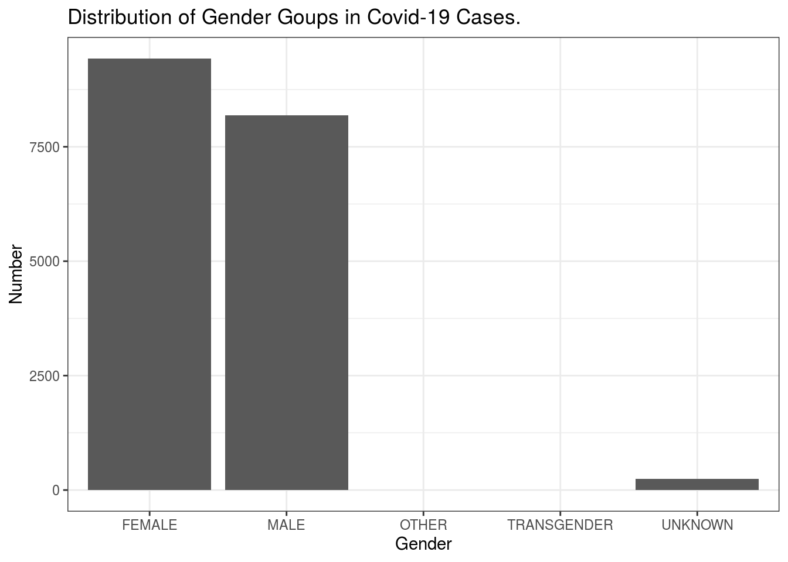
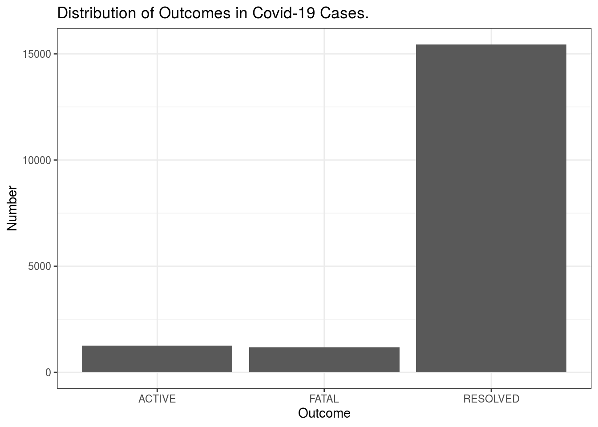
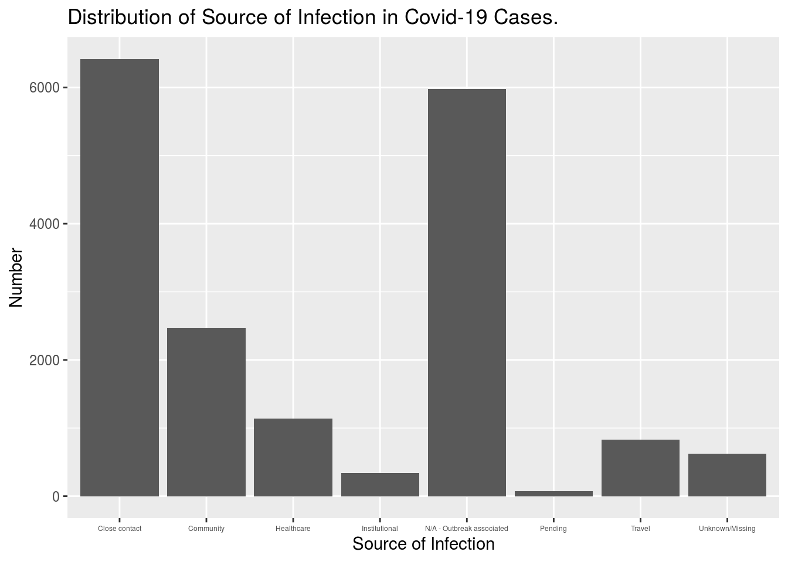

Abstract
In this article, we investigated the covid-19 cases in Toronto. We want to demonstrate how covid-19 cases spread around Toronto, what age group has the highest number of cases, and the rate of severity in all cases, etc. Through analyzing the data from open data Toronto, we want to show people a comprehensive and detailed circumstances of this ongoing pandemic in Toronto.
Introduction
Including Plots
You can also embed plots, for example:
 

Discussion
Most cases in which area Most outbreak associated Most patient in which age group Most patients were infected by More female patients than male patients age group in each gender Total fatal cases and active cases, most active cases in each area
How many patients are currently hospitalized how many patients are ever hospitalized How many patients are currently in ICU How many patients are ever in ICU How many patients are currently intubated How many patients are ever intubated
percentage of fatality for patient ever in ICU, intubated and hospitalized.
correlation between age and conditions
## # A tibble: 97 x 2
## FSA count
## <chr> <int>
## 1 M9V 1001
## 2 M3N 764
## 3 NaN 618
## 4 M6M 576
## 5 M9W 508
## 6 M9R 483
## 7 M1E 477
## 8 M3J 474
## 9 M9N 405
## 10 M1B 376
## # … with 87 more rows## # A tibble: 141 x 2
## `Neighbourhood Name` count
## <chr> <int>
## 1 NaN 678
## 2 Mount Olive-Silverstone-Jamestown 564
## 3 West Humber-Clairville 558
## 4 Glenfield-Jane Heights 555
## 5 Downsview-Roding-CFB 522
## 6 York University Heights 488
## 7 Islington-City Centre West 415
## 8 Weston 368
## 9 Kingsview Village-The Westway 365
## 10 Black Creek 347
## # … with 131 more rows## # A tibble: 10 x 2
## `Age Group` count
## <chr> <int>
## 1 20 to 29 Years 3049
## 2 30 to 39 Years 2724
## 3 50 to 59 Years 2720
## 4 40 to 49 Years 2416
## 5 60 to 69 Years 1813
## 6 80 to 89 Years 1557
## 7 19 and younger 1311
## 8 70 to 79 Years 1133
## 9 90 and older 1116
## 10 NaN 33## # A tibble: 8 x 2
## `Source of Infection` count
## <chr> <int>
## 1 Close contact 6419
## 2 N/A - Outbreak associated 5974
## 3 Community 2471
## 4 Healthcare 1142
## 5 Travel 830
## 6 Unknown/Missing 622
## 7 Institutional 344
## 8 Pending 70## # A tibble: 5 x 2
## `Client Gender` count
## <chr> <int>
## 1 FEMALE 9427
## 2 MALE 8184
## 3 UNKNOWN 250
## 4 OTHER 6
## 5 TRANSGENDER 5## # A tibble: 37 x 3
## # Groups: Client Gender [5]
## `Client Gender` `Age Group` count
## <chr> <chr> <int>
## 1 MALE 20 to 29 Years 1540
## 2 FEMALE 20 to 29 Years 1486
## 3 FEMALE 50 to 59 Years 1483
## 4 MALE 30 to 39 Years 1369
## 5 FEMALE 30 to 39 Years 1328
## 6 FEMALE 40 to 49 Years 1290
## 7 MALE 50 to 59 Years 1221
## 8 MALE 40 to 49 Years 1095
## 9 FEMALE 80 to 89 Years 967
## 10 MALE 60 to 69 Years 912
## # … with 27 more rows## # A tibble: 3 x 2
## Outcome count
## <chr> <int>
## 1 RESOLVED 15440
## 2 ACTIVE 1254
## 3 FATAL 1178## # A tibble: 135 x 2
## `Neighbourhood Name` count
## <chr> <int>
## 1 Waterfront Communities-The Island 88
## 2 NaN 50
## 3 Niagara 41
## 4 York University Heights 39
## 5 Church-Yonge Corridor 34
## 6 Islington-City Centre West 34
## 7 West Humber-Clairville 31
## 8 Black Creek 29
## 9 Kingsview Village-The Westway 26
## 10 Mount Olive-Silverstone-Jamestown 25
## # … with 125 more rows## # A tibble: 2 x 2
## `Currently Hospitalized` count
## <chr> <int>
## 1 No 17838
## 2 Yes 34Weakness and next steps
References
Carrieri, D., Peccatori, F. A., & Boniolo, G. (2020). COVID-19: a plea to protect the older population. International journal for equity in health, 19(1), 72. https://doi.org/10.1186/s12939-020-01193-5
D’cruz, M., & Banerjee, D. (2020). ‘An invisible human rights crisis’: The marginalization of older adults during the COVID-19 pandemic - An advocacy review. Psychiatry research, 292, 113369. Advance online publication. https://doi.org/10.1016/j.psychres.2020.113369
Jalili, M., Payandemehr, P., Saghaei, A., Sari, H. N., Safikhani, H., & Kolivand, P. (2020). Characteristics and Mortality of Hospitalized Patients With COVID-19 in Iran: A National Retrospective Cohort Study. Annals of internal medicine, M20-2911. Advance online publication. https://doi.org/10.7326/M20-2911